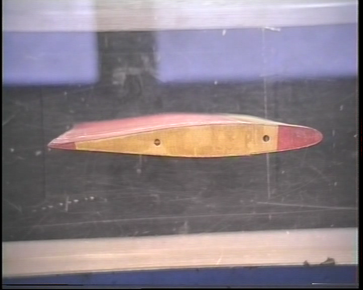
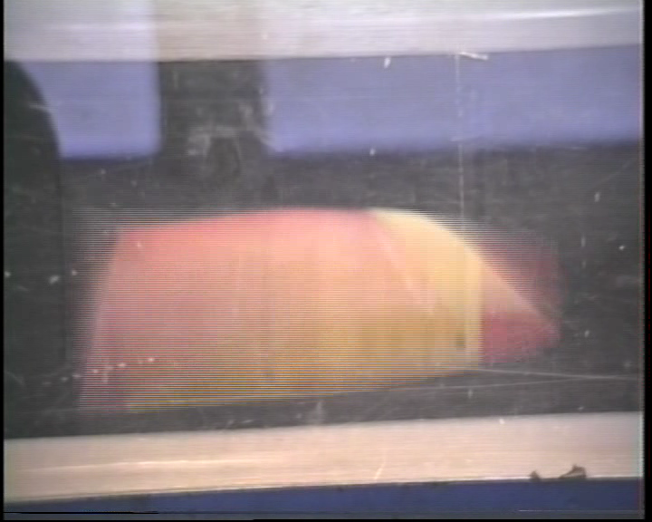
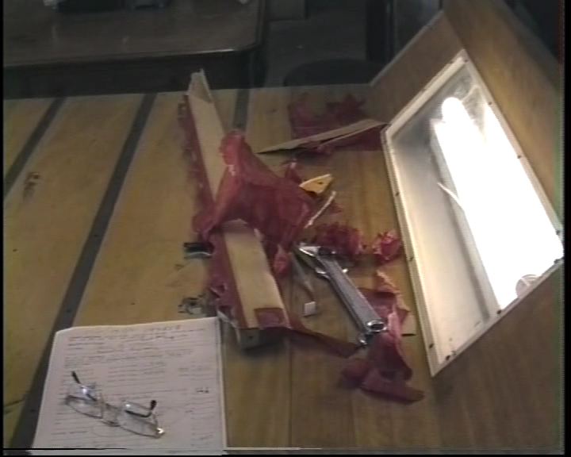

AEROELASTICITY
Wing – Flutter and Divergence.
The dynamic interaction of airflow with a flight vehicle is one of the more complex problems to be solved in the aerospace field. Most aerodynamics deals with flow around rigid objects but, in fact, a flight vehicle is a relatively light weight structure and there is always a degree of flexibility that can lead to interesting modes of motion. Aerodynamic forces applied to a vehicle will not only cause it to change flight path according to the rules of aircraft performance and flight mechanics but will also cause flexure of aircraft components relative to each other. These forced structural modes of motion lead to a class of problems that fall under the heading of aeroelasticity.
One of the simplest interactions that is found in a fixed wing aircraft is the flexure of the wing relative to the rigid fuselage. For aircraft with slender straight cantilever wings two typical modes of motion exist. The first is a bending mode where the wing tip flexes up and down relative to the fixed wing root. The second is a twisting mode where the wing rotates about its stiffness axis, which is typically the spar. Normally there is minimal effect of these two modes on structural behaviour, with only a slight vibration being seen for each motion. The bending mode shows up as a relatively low frequency flapping effect while twisting mode is found to be a much higher frequency vibration. However, with the application of high-speed airflow as a source of excitation energy, these two modes can produce motions with will severely distort or break the wing.
The first effect is called divergence. In this case the moment produced by the air load is greater than the structural torsional stiffness of the wing and thus it will be twisted off the vehicle. The threshold speed for this type of failure to occur is called divergence speed and will hopefully be much higher than any normal operating speeds of the vehicle. Particular problems occur with swept forward wings as these have a relatively low divergence speed.
The second effect is called flutter. In this case there is a synchronised interaction between both modes so that energy is absorbed from the airflow in one mode to increase the amplitude of the other. At this point the frequency of each mode has converged to the same value so that only one combined mode is possible. The wing will absorb energy from the airflow and will behave as an ever increasing bending and torsion flexure until sufficient displacement is reached and the wing breaks. When the airflow is increased to the critical point to cause this failure, it is called the flutter speed. Again flutter should only occur at speeds much higher than operating speeds of the aircraft, but may be induced by inappropriate ratio of wing torsion and bending stiffness, or by addition of wing mass at points a long way behind the wing spar.
An estimate of the occurrence of these conditions and the interaction of airflow on a wing can be obtained using a simple 2-degree of freedom dynamic model of the wing. The following figure shows the idealised model of a straight cantilever wing.
Bending stiffness of wing connected to the fuselage is approximated by a bending spring of stiffness (Kh). Torsion stiffness is similarly represented by a torsion spring of stiffness (Kα). This allows the generic wing section shown to move relative to the fuselage in bending, (heave direction, h) and torsion (angle rotation, α). The origin for these motions will be the wing’s elastic axis. It is assumed that the centre of gravity of the wing and the centre of lift act at the locations shown, with distances xcg and xac from these points to the elastic axis. Second order effects due to aerodynamic drag and structural damping have been neglected.

By applying Newton’s laws for both motion components a pair of reaction equations can be defined. The general principle of “F = ma” can be applied, force produces acceleration moderated by inertia.
In this case there are two equations, one for each mode of motion.
$$-L-K_hh=m{d^2h}/{dt^2}+S_α{d^2α}/{dt^2}$$
for bending motion and
$$Lx_{ac}-K_αα=I_α{d^2α}/{dt^2}+S_α{d^2h}/{dt^2}$$
for torsion motion,
where m = mass of wing, Iα = polar inertia of wing ( $I_α=∫r^2 .dm$ ) and due to the offset of center of gravity from motion origin, a coupling is produced between each mode moderated by a coupling inertia Sα, ( $S_α=∫r.dm≈x_{cg}m$ )
The form of the vibration can be assumed to be simple harmonic motion such that $h=h_0 e^{iωt}$ and $α=α_0e^{iωt}$ , where h0 and α0 are the amplitudes of the motion and ω is the frequency. Note that both amplitudes and frequency can be complex values to allow for phase shift between components and damping of motion.
Also, if simple harmonic motion is assumed, then the stiffness of the wing for bending and torsion modes can be found from the known natural frequencies of its modes.
$$K_h=ω_h^2m$$
and
$$K_α=ω_α^2 I_α$$
On substitution of the assumed motion into the governing equations a linear pair of simultaneous equations are obtained.
$$-L-K_hh_0e^{iωt}=-mω^2h_0e^{iωt}-S_αω^2α_0e^{iωt}$$
$$Lx_{ac}-K_αα_0e^{iωt}=-I_αω^2α_0e^{iωt}-S_αω^2h_0e^{iωt}$$
To simplify further, linear aerodynamic forcing functions need to be introduced. Assuming that the effect of camber and fixed angle of attack are able to be calculated separately and superimposed later on any oscillatory solution, then the aerodynamic influence required at this point is just due to the oscillatory motion of the chord line about 0 degrees. Assuming torsion effect dominates, as it has greatest influence on angle of attack, and neglecting any second order acoustic and compressibility effects, then lift could be approximated as,
$$L={dC_L}/{dα}α1/2ρV^2S=C_{Lα}qSα=C_{Lα}qSα_0e^{iωt}$$
on substitution, a final linear system is obtained, with $e^{iωt}$ cancelling out.
$$-C_{Lα}α_0qS-K_hh__0=-mω^2h_0-S_αω^2α_0$$
$$C_{Lα}α_0qSx_{ac}-K_αα_0=-I_αω^2α_0-S_αω^2h_0$$
in matrix format this becomes,
$$[{\table m.ω^2-K_h, S_αω^2-C_{Lα}qS; S_αω^2, I_αω^2-K_α+C_{Lα}qSx_{ac}}] × ({\table h_0; α_0}) = ({\table 0; 0})$$
Although not directly solvable due to the number of variables, this matrix system does give a large amount of information about the behaviour of the system.
Two classes of solution can be found:
- $[{\table a,b;c,d}] × ({\table h_0;α_0})=({\table 0;0})$ when $({\table h_0;α_0})=({\table 0;0})$ . The system is trivially stable and nothing happens. This is the dominant solution for the system.
- $[{\table a,b;c,d}] × ({\table h_0;α_0})=({\table 0;0})$ when $|{\table a,b;c,d}| = 0$ . This second form of solution may allow displacements to be unbounded and the wing behaviour will tend to be oscillatory, either stable or unstable depending on the value of ω.
The equation $|{\table a,b;c,d}| = ad-bc =0$ gives solutions for ω which will define the motion. These solutions depend mainly on the speed of the vehicle and hence are controlled by the value of dynamic pressure (q) as other components such as wing stiffness and lift gradient remain constant
Simple Harmonic Motion
If ω has only complex solutions and no real valued solutions exist then the system behaviour will be oscillatory. Given initial disturbance values of α0 and h0, subsequent motion will be simple harmonic and either damped (decreasing amplitude) or undamped (increasing amplitude) depending on the imaginary part of ω.
Complex values of frequency (ω = ωR + i.ωI) moderate the amplitude behaviour over time as
$$e^{iωt}=e^{i(ω_R+iω_I)t}=e^{iω_Rt}e^{i^2ω_It}=e^{-ω_It}e^{iω_Rt}$$
The actual frequency of motion will be given by ωR and the growth or decay of the motion will be determined by the sign of ωI, leading to highly damped or growing amplitude solutions.
At low values of dynamic pressure, q, the solution to this system matrix gives separate independent roots for ω which are typically real valued and close to the natural frequencies of the structural modes. This implies that any disturbances will cause the wing to oscillate at or near its structural modes with little or no damping. Second order damping effects which are not part of the above model will typically decrease the amplitude of oscillation in a real structure until it reaches zero and then obeys the trivial zero amplitude stable solution.
Increasing dynamic pressure will eventually result in a solution in which ω has only one real value indicating the both modes are in synchronization. While there is no indication of a variation of amplitude at this point, any slight increase in q will then produce complex frequency solutions with negative imaginary components. So any increase in flight speed above this point causes coupling of the modes and a rapid increase in amplitude of the oscillation, that is, flutter. The speed at which a single real frequency is obtained is the starting point for undamped oscillatory solutions of the structure so that this will termed the flutter speed of the vehicle. Thus one significant aim is to solve the determinant equation above to find flutter speed.
Firstly define the equation of the determinant,
$$(mω^2-K_h)(I_αω^2-K_α+C_{Lα}qSx_{ac})-S_αω^2(S_αω^2-C_{Lα}qS)=0$$
In order to solve for ω the equation is rearranged in powers of ω
$$Aω^4+Bω^2+C=0$$
where,
$$\cl"ma-join-align"{\table A, = mI_α-S_α^2; B, = S_αC_{Lα}qS+mC_{Lα}qSx_{ac}-mK_α+I_αK_h; C, = K_hK_α-K_hC_{Lα}qSx_{ac}}$$
The solution is
$$ω^2={-B±√{B^2-4AC}}/{2A}$$
Based on the magnitudes of A, B and C , the solution will initially be purely real if $B^2>4AC$. This gives two roots which represent the independent stable modes of motion. For increasing speed, the magnitude of q will grow until eventually $B^2=4AC$. At this point the solution for a single real frequency exists producing an unbounded amplitude solution. This will be the flutter point and the speed required to achieve this will be the flutter speed. Any further increase in q produces complex roots leading to unstable, increasing amplitude motion.
Non-Oscillatory Motion leading to Divergence
As well as flutter predictions the solution of the determinant equation can also indicate another non-oscillatory increasing amplitude motion called divergence. If the real part of ω is zero then the motion could be either exponentially increasing or decreasing. Again at low speed, the system tends to produce non-zero solutions for ωR. Then as speed is increased, ωR may decrease for some modes. If ωR reaches zero for a mode before the onset of flutter, then subsequent increase in dynamic pressure will lead to a solution which is purely imaginary and hence a physical divergence of the structure. Divergence speed can be defined as the solution of the determinant equation for ω = 0. Substitution into the expanded equation above gives
$$-K_h(-K_α+C_{Lα}qSx_{ac})=0$$
or
$$K_α=C_{Lα}qSx_{ac}$$
As all terms are fixed for a fixed geometry except for q, then this solution will determine the divergence speed. This will be the air speed required to reach the point where the aerodynamic moment equals the torsional stiffness of the wing so there will be an unrestrained twist displacement.
Demonstration of Flutter
The following video shows a wind tunnel experiment using a scaled 3D wing in a low speed wind tunnel. The airspeed is slowly increased until the flutter speed is reached.
| BEFORE  |
DURING  |
AFTER  |
| Download : Wing Flutter Movie (MP4) | ||
SOFTWARE
The following server application calculates frequency responses for airflow applied over a range of velocities to a wing of given geometry, inertia and stiffness.
Wing bending-torsion interaction predictions.